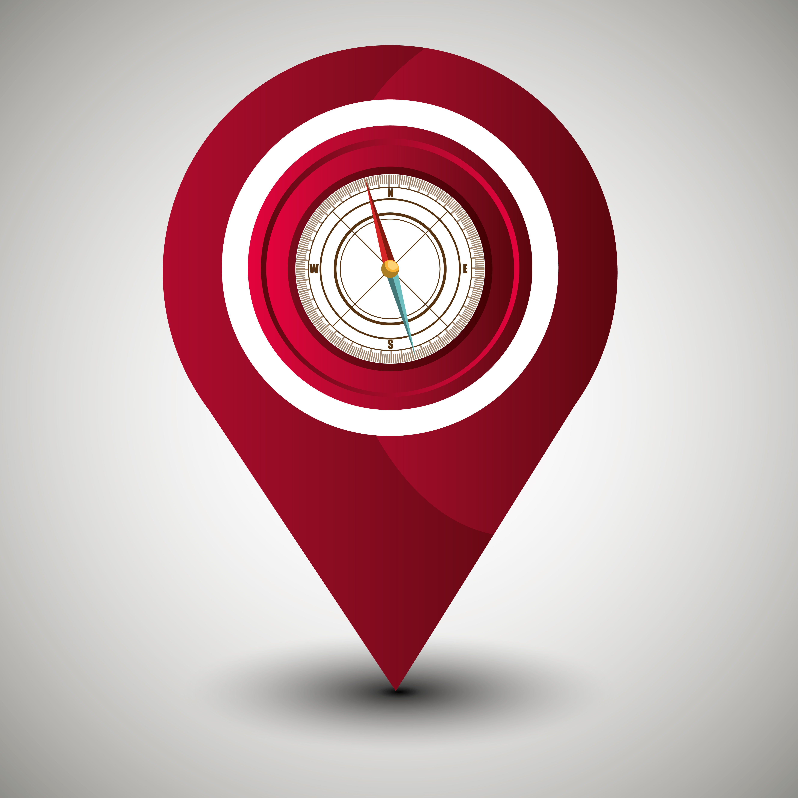

Bahawalpur is said to be the 12th largest city of Pakistan and situated in Punjab. It was recognized as the capital of a princely state after the Durrani Empire declined. This princely state was founded by Nawab Muhammad Bahawal Khan-II in the early ninetheenth century. Later on, Bahawalpur was also given the status of province. Bahawalpur city used has been hsitorically the hometown and hub of various different Nawabs and rulers of their times. In the United India Bahawalpur was called the Rajputana State which is now Rajhistan in India.
The city is renowned for its many famous places which include the like of Noor Mahal, Darbar Mahal Sadiq Ghar Palace, as well as some more ancient fort of Derawar located in the Cholistan Desert and bordering India. The city’s location itself has historical significance as it is situated near the historical and ancient city of Uch as well as close to Harappa, both of which used to be a stronghold of the Dehli sultanate and Indus Valley Civilisation respectively.
As already mentioned, Bahalwalpur has been home to most of the kings and nawabs so it is an important attractions for tourist, historians and archaeologists. These kings built palaces for themselves which are a major cause of tourist attraction.
A number of shopping centers are being built in Bahawalpur considering the amount of tourism it attracts and also for the development of the city .Shahi Bazar, Machli Bazar, Farid Gate and The Mall are the main shopping area. these markets resemble the old markets of Lahore such as Anarkali Bazar etc. Shopping has become an important part of the everyday life cycle. The markets are attractive for traders and craftsman. These craftsman sell all sorts of art and handiwork to the travelers and the tourist for a handosme amount.
آ بہاولپور دے چوک سرائکی وچ تیکوں امب دا ٹھڈا جوس پلاواں
click this icon to see on map 